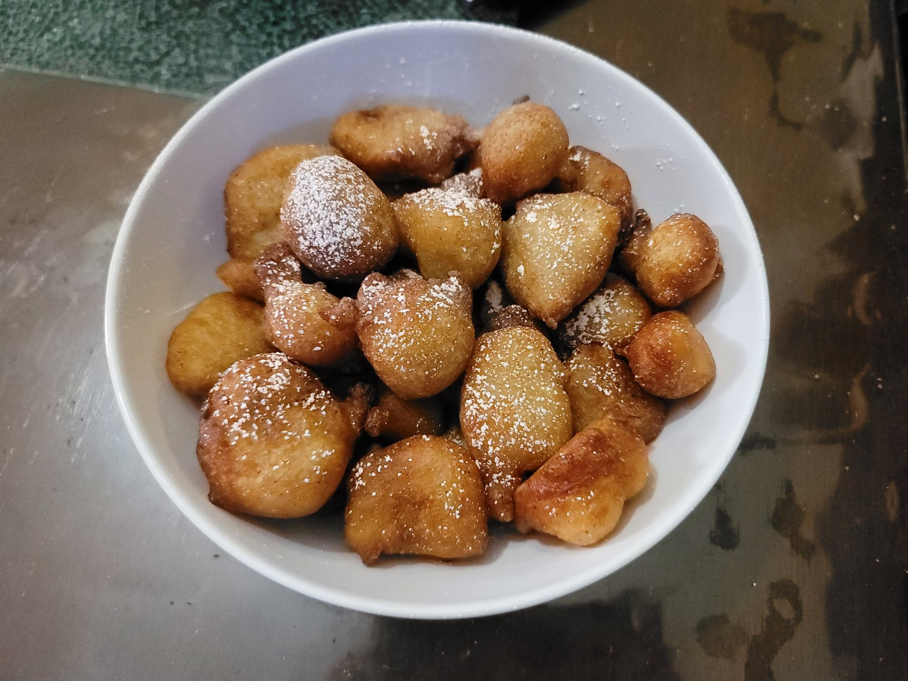

Puff Puff

Ingredients:
- 2 cups (240 g) Flour
- 1 1/4 (312.5 g) cup Water
- 2 tsp Active dry yeast
- 1 tsp Nutmeg
- 1/2 tsp Salt
- 1/4 cup (50 g) Sugar + 1 tsp
- Oil, for deep frying
- Optional: Powdered sugar, for dusting
Instructions:
- Combine 1/2 cup warm water, 1 tsp Sugar, and the yeast. Let activate for 5-10 minutes.
- In a large mixing bowl, whisk together the flour, nutmeg, sugar, and salt. Then add in the rest of the water and the yeast mixture. Whisk together until there are no lumps. Cover and let rise for 1-2 hours.
- Heat about 3 inches oil to about 350 degrees Fahrenheit in a tall pot. With a wet hand, scoop small amounts of the batter and drop them into the pot, making sure not to overcrowd the pot. In batches, fry both sides until golden brown, about 5 minutes altogether, flipping as needed. Then remove them to a paper towel lined plate to remove excess oil before transfering to a serving plate. Repeat until all of the batter is finished.
- Optionally dust with powdered sugar. Serve warm.